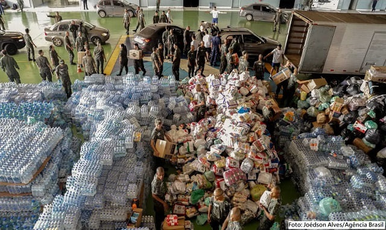
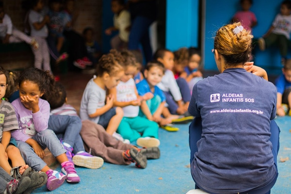
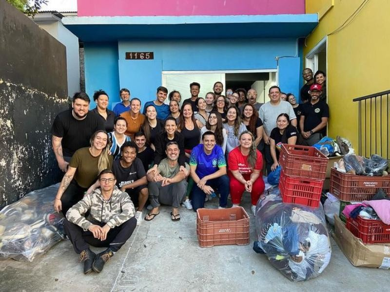

Alimento para Todos
Projeto destinado à arrecadação e distribuição de alimentos para famílias em situação de vulnerabilidade social.
As doações são organizadas em cestas básicas e distribuídas para famílias cadastradas.
Conheça algumas das iniciativas desenvolvidas pela Conexão Solidária.

Projeto destinado à arrecadação e distribuição de alimentos para famílias em situação de vulnerabilidade social.
As doações são organizadas em cestas básicas e distribuídas para famílias cadastradas.

Iniciativa que oferece atividades educativas, reforço escolar e oficinas para crianças e adolescentes.
Voluntários podem participar auxiliando nas aulas e atividades realizadas pelo projeto.

Durante os períodos mais frios do ano, arrecadamos roupas, cobertores e calçados.
Os itens arrecadados são destinados a pessoas em situação de vulnerabilidade.
Projeto que promove oficinas de tecnologia para pessoas que possuem pouco contato com computadores e serviços digitais.
O objetivo é aumentar a autonomia digital e facilitar o acesso à informação.
Você pode contribuir participando como voluntário ou apoiando nossas campanhas de arrecadação. Toda contribuição ajuda nossos projetos a alcançarem mais pessoas.
Cadastre-se como voluntário e ajude a transformar a vida de outras pessoas.
Quero ser voluntário